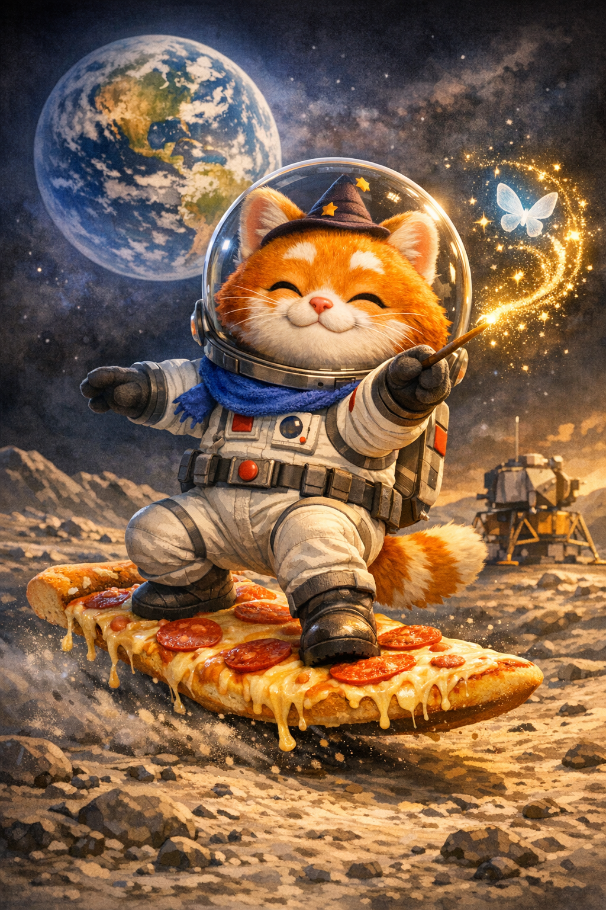
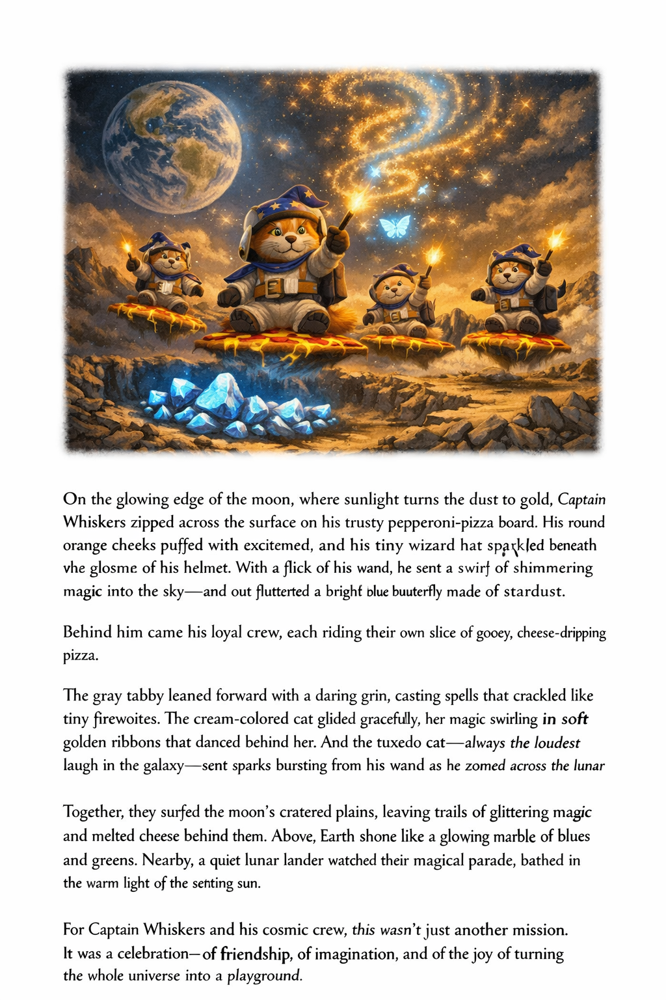
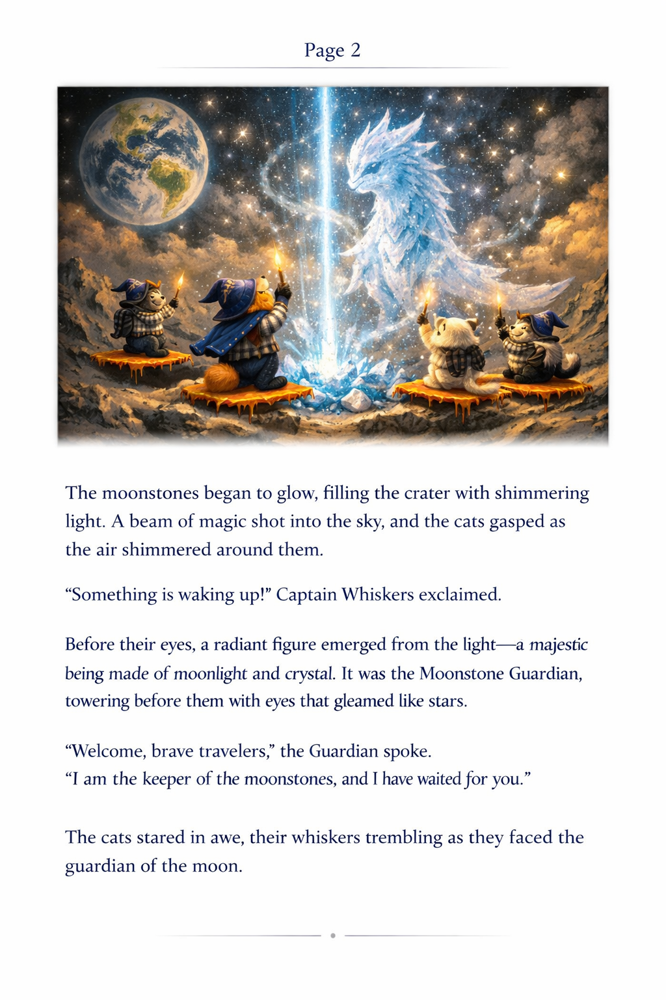
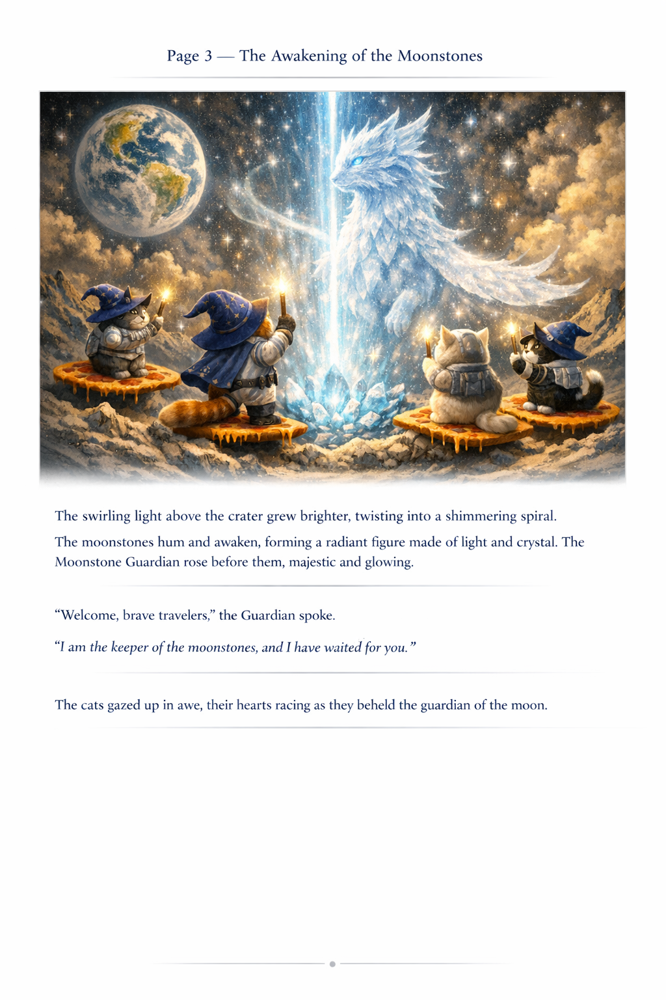
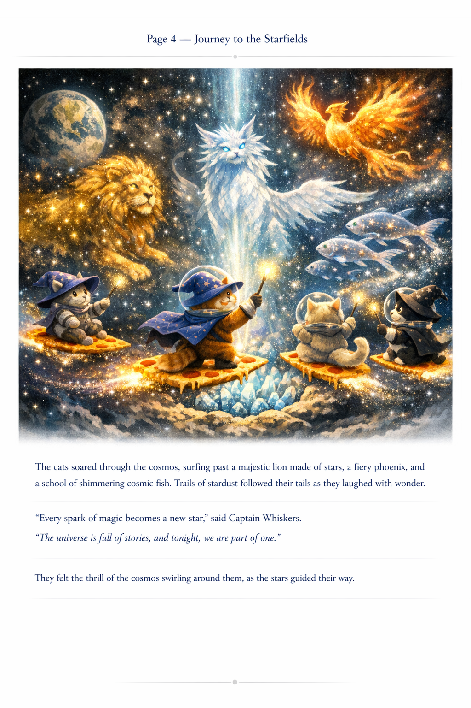
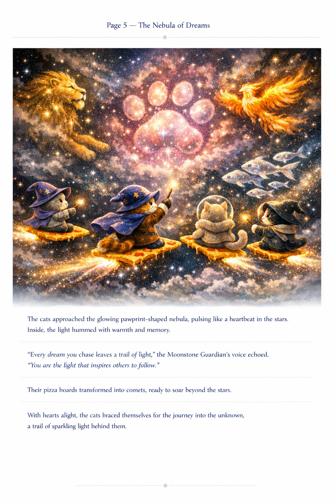
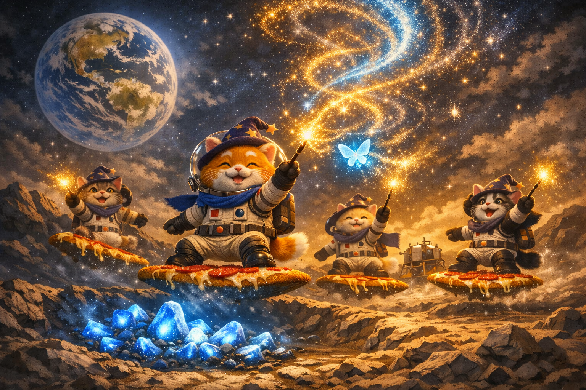

A magical children’s story by Joseph Jerome Ibanga about Captain Whiskers and his cosmic crew as they surf across the moon, awaken ancient moonstones, and discover that every dream can leave a trail of light.
“Every dream you chase leaves a trail of light.”

Space Wizard Cats is a heartwarming adventure filled with moonlit wonder, sparkling magic, and unforgettable feline heroes. Captain Whiskers and his loyal crew ride enchanted pizza boards across the moon, awaken the Moonstone Guardian, and soar into dazzling starfields beyond the night sky.
A brave orange cat with a wizard hat, a glowing wand, and a heart full of wonder.
A brave gray tabby, a gentle cream-colored cat, and a playful tuxedo cat.
A radiant being of crystal and moonlight who guides the crew toward the stars.
Captain Whiskers stood on the moon. Earth glowed bright and blue above him. He lifted his wand, and a golden spark twinkled at the tip.
Whoosh! Captain Whiskers zoomed across the moon on his pepperoni-pizza board with his friends racing behind him through moon dust, sparkles, and magic.
The glowing blue moonstones hummed, shimmered, and blazed with light until the Moonstone Guardian rose from the crater.
The cats soared upward on blazing pizza boards, flying past a golden lion, a fiery phoenix, and shimmering cosmic fish.
Far beyond the moon, the cats found a glowing pawprint-shaped nebula and heard a voice promise that every dream leaves a trail of light.
With wands raised high, the Space Wizard Cats sent sparkling light across the universe, turning each glittering spark into a brand-new star.





